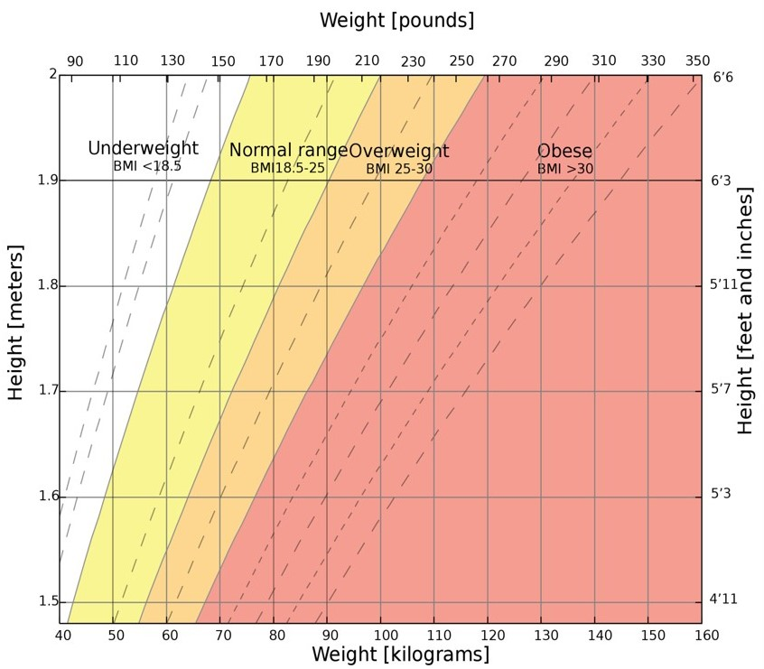

<nb-layout>
  <nb-layout-column style="display: flex;">
    <div class="container d-flex align-items-center justify-content-center">
      <div class="row">
        <div class="col-md-12">
          <div class="text-center mb-5 pb-3 mt-4 pt-5">
            <!-- <p class="text-uppercase mb-0 pres">Vous etes prêt à apprendre ?</p> -->
            <h1 class="text-secondary">Body mass index BMI calculator women</h1>
          </div>
        </div>
        <div class="col-md-5">
          
        </div>
        <div class="col-md-7">
          <app-form-bmi class=""></app-form-bmi>
        </div>
        <div class="col-md-5" *ngIf="href.slice(27, href.length) == 'men'">
          
        </div>
        <!--  -->
        <div class="col-12 text-center my-2">
          <!-- <p class="text-uppercase mb-0 pres">Vous etes prêt à apprendre ?</p> -->
          <h2 class="text-secondary">Learn more about BMI calculator women</h2>
        </div>
        <div class="row border shadow bg-white my-4">
          <div class="col-md-12 mx-2 my-4">
            <p>A woman's body mass index (BMI) is an important indicator of her general health. You can calculate your BMI using our free online calculator. 
              Just enter your age, weight and height, and the calculator will do the rest A high BMI can put a
              woman at risk for developing obesity-related diseases, such as heart disease, stroke, and diabetes</p>
            <div class="text-center">
              
            </div>
            <h3 class="text-secondary">Womens bmi calculator 2021</h3>
            <p>A woman's body mass index (BMI) is a calculation that is used to determine if she is overweight,
              underweight, or normal. The calculation uses a woman's weight and height to calculate her BMI.</p>
            <p>BMI of 18.5-24.9 is considered normal, 25-29.9 is overweight, and 30 or above is obese.</p>
            <p>
              The BMI Calculator for Women 2021 is a great tool to help you determine your body mass index. This
              calculator is based on the latest BMI guidelines, so it will give you an accurate reading. Simply enter
              your height and weight, and the calculator will do the rest.
            </p>
            <h3 class="text-secondary">Women\'s bmi calculator cdc</h3>
            <p>BMI is an important measure of body fatness and weight status. BMI can be used to screen for overweight
              and obesity in adults. Adults with a BMI of 25 or higher are considered overweight, and adults with a BMI
              of 30 or higher are considered obese.</p>
            <p>The CDC women's BMI calculator is a helpful tool for estimating your body mass index. This calculator is
              designed specifically for women, and takes into account factors such as weight, height, age, and frame
              size. By inputting this information, you can get a more accurate</p>
            <p>
              reading of your BMI, and determine whether or not you are within a healthy range.
            </p>
            <h3 class="text-secondary">Women\'s bmi calculator by age</h3>
            <p>A woman's body mass index (BMI) is a measure of body fat based on height and weight. BMI is used to
              determine if you are at a healthy weight for your height. Use this calculator to find out your BMI, and
              see how it changes with age.</p>
            <p>Use our calculator to determine your (BMI) body mass index.This is an estimation of your body fat
              percentage.</p>
            <h3 class="text-secondary">Women\'s bmi calculator bmi chart</h3>
            <p>The Body Mass Index (BMI) is a calculation that uses your height and weight to estimate how much body fat
              you have. The BMI chart below can help you determine if you are at a healthy weight for your height.</p>
            <p>
              BMI is used to indicate if a person is underweight, normal weight, overweight, or obese. The calculation
              for Body Mass Index is weight in kilograms divided by height in meters squared. The chart below can help
              you determine your BMI.
            </p>
            <div class="text-center">
              
            </div>
            <h3 class="text-secondary">Female bmi calculator</h3>
            <p>A woman's body mass index (BMI) is an important indicator of overall health. The BMI calculator below can
              help you determine your BMI and whether you are within a healthy weight range. Remember that BMI is only
              one indicator of health and that other factors, such as muscle mass, also play a role in overall health.
            </p>
            <p>BMI, or body mass index, is a calculation that allows you to determine how healthy your weight is for
              your height. The calculation is based on the mass and height of a person, and it’s used to measure obesity
              levels. You can use a BMI calculator to figure out your BMI, and there are many online calculators that
              are easy to use.</p>


          </div>
        </div>
        <!-- <app-info></app-info> -->
      </div>
    </div>
  </nb-layout-column>
</nb-layout>
